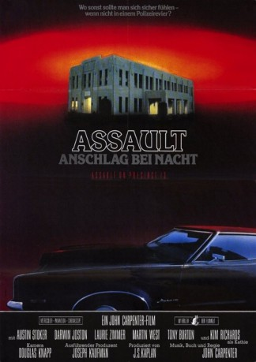

#4049 Assault - Anschlag bei Nacht
Alternativ: Assault on Precinct 13
 
 IMDB-Wertung: 7.4 / 10
IMDB-Wertung: 7.4 / 10  Metascore: 0
Metascore: 0 
Schon seit längerem brodelt es in den Straßen von L.A. Als die Polizei des Nachts eine komplette Jugendgang auslöscht, eskaliert die Situation. Die Jugendlichen bewaffnen sich und ziehen mordend durch's Ghetto. Nach dem brutalen Mord an einem kleinen Mädchen sinnt dessen Vater auf Rache und tötet den Täter. Als der Vater dann auf der Flucht vor dem Rest der Gang in ein Polizeirevier flieht, wird es von den jugendlichen Angreifern regelrecht belagert. Für den einzigen Polizeitbeamten des eigentlich schon geschlossenen Reviers und die ihn unterstützenden Häftlinge beginnt eine mörderische Nacht...
Jahr: 1976
Dauer: 90 Minuten
FSK: 16
Land: USA Studio: Turtle ReleasingTonspuren: DTS - ,
Untertitel: Deutsch,
Auflösung: 1080p (1920x816) Größe: 8734 MB
Genre: Action, Thriller, Krimi
Regisseur:  John Carpenter
John Carpenter
Drehbuch: D.N. Dream Partners
Soundtrack:
Darsteller:
- Austin Stoker als Ethan Bishop
- Tony Burton als Wells
 Charles Cyphers als Starker
Charles Cyphers als Starker Henry Brandon als Chaney
Henry Brandon als Chaney- Kim Richards als Kathy
- Brent Keast als Radio Announcer
 John Carpenter als Gang Member , uncredited
John Carpenter als Gang Member , uncredited- Darwin Joston als Napoleon Wilson
- Laurie Zimmer als Leigh
- Martin West als Lawson
 Nancy Kyes als Julie
Nancy Kyes als Julie- Peter Bruni als Ice Cream Man
- John J. Fox als Warden
- Marc Ross als Patrolman Tramer
- Alan Koss als Patrolman Baxter
- Frank Doubleday als White Warlord
- Gilbert De la Pena als Chicano Warlord
- Peter Frankland als Caudell
- Al Nakauchi als Oriental Warlord
- James Johnson als Black Warlord
- Gilman Rankin als Bus Driver
- Cliff Battuello als First Guard
- Horace Johnson als Second Guard
- Valentine Villareal als Chicano Tough
- Kenny Miyamoto als Oriental Tough
- Jerry Viramontes als Chicano Hood
- Len Whitaker als Black Hood
- Kris Young als Gang Member
- Randy Moore als Gang Member
- Warren Bradley III als Gang Member
- Joe Woo Jr. als Gang Member
- Bill Taylor als Gang Member
- Maynard Smith als Police Commissioner
- James Jeter als Precinct Captain , uncredited
Datei: X:\1976\Assault - Anschlag bei Nacht (1976, FSK16, 1920x816).mkv seit 15.07.2016
Festplatte: HD 1971-1979
 Es gibt insgesamt 31 Filme in der Gruppe '1976'
Es gibt insgesamt 31 Filme in der Gruppe '1976'